Chromium Updater
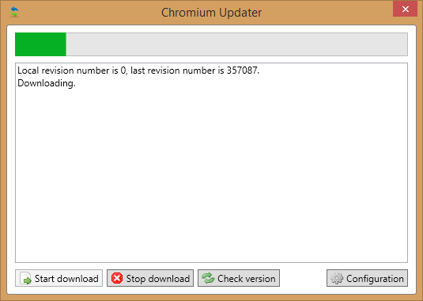
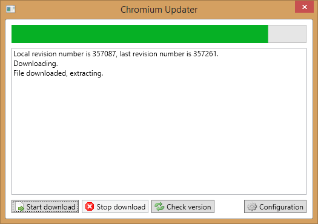

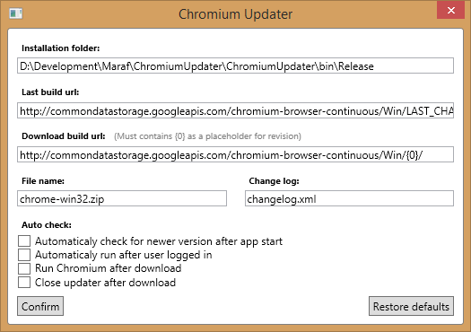
Chromium updater is Click-once application for downloading and updating latest builds of Chromium.
The application offers automatic or manual download of latest build to selected folder and then extracting it there.
Configuration
On first run, configuration tab is opened. The application requires folder for downloading zips to and this folder is prefilled with the application instalation folder.
This can be quite problem, if the application installed to folder, where current user doesn't have write rights. So be sure to fill folder with write rights.
Beside this, there are prefilled download URL and file name. These must match structure of Chromium builds structure on the server.
This is recommended to not change...
In the bottom there are some checkboxes for setting automatic downloads and etc. These should match most user preferences.
Download
Version history
-
v1.0.2
- Async file extraction (no UI blocking).
-
v1.0.1
- Added support for autorun (after user login).
- Minor issues fixed
Vocabulary App
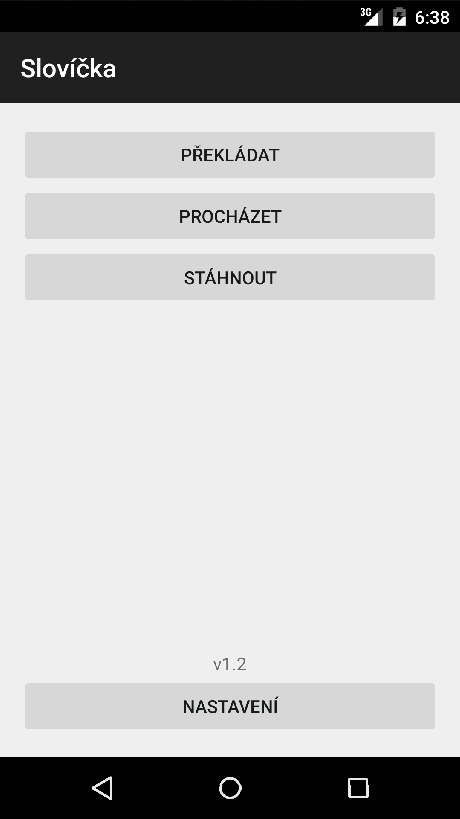
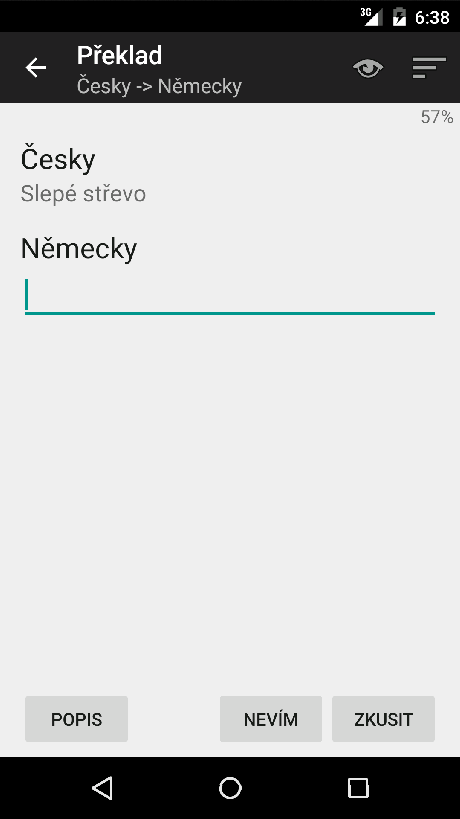
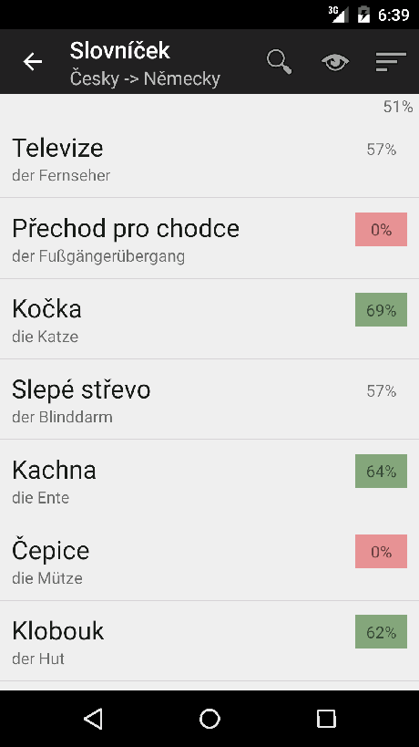
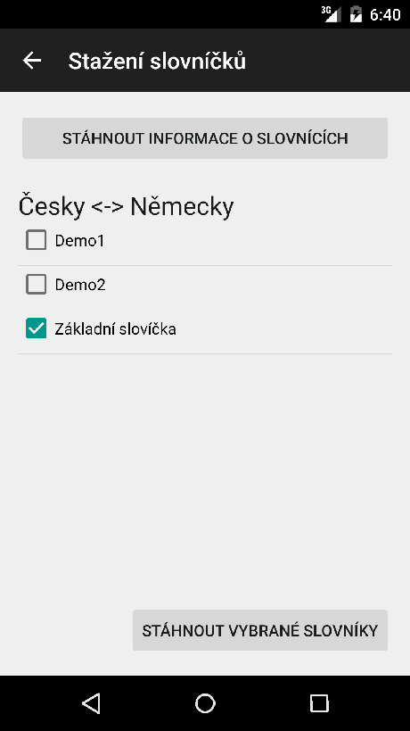
Android application for testing your vocabulary. User can download vocabularies from our API and browse and test phrases placed in it.
Vocabularies are splitted into files, so user can download only selected parts of vocabulary. Vocabulary definitions are in testing phase right now, but the client application is fully functional.
For more information and .apk file check our release page at GitHub.
Download
Version history
-
v1.2.0
- Extended duplicity check to show duplicated items.
- Selection of difficulty group in phrases translation.
-
v1.1.0
- Add support for tagging phrases.
- Add base duplicity checks.
- Fix translating when only one phrase is in the session.
- Posibility to entry phrase after giving up.
-
v1.0.0
- Downloading XML vocabularies from API v1.
- Local caching of downloaded data.
- Local storage for user statistics.
- Browsing downloaded/local vocabularies (with filtering and sorting).
- Translating word.
WinRun
Simple utility application with (missing) Windows tweaks.
- Large windows clock.
- Simply open network adapter configuration page.
- Turn off monitor.
- Lock workstation and turn off monitor.
- Put computer to sleep.
- Make all windows sticky.
About sticking windows, when you drop window near other window, the dropped window will stick the other window.
Some for resizing, when resizing window and stopped near other window, the resized window will resize to the other window.
Hotkeys:
-
Win+F3 to turn the monitor off.
-
Win+F4 to put the computer to sleep.
-
Win+F5 to open Network Adapter window.
-
Win+F6 to open large clock.
-
Win+Shift+F6 to open medium clock.
-
Win+F12 to put the computer to hibernation.
-
Win+Shift+L to turn the monitor off and lock the computer.
-
Drag and drop or resize any window near other window stick the window to the other.
Download
Version history
-
v1.6.0
- Sticky Windows.
- Internal reimplementation of features.
- Fix medium clock Windows wide shotcut.
-
v1.5.0
-
v1.4.1
- Fix clock window padding.
- Fix clock position saving.
-
v1.4.0
-
v1.3.0
- Add hibernation global hotkey.
-
v1.2.0
- Add lock workstation global hotkey.
- Add Network Adapter window global hotkey.
(Visual Studio) Solution runner
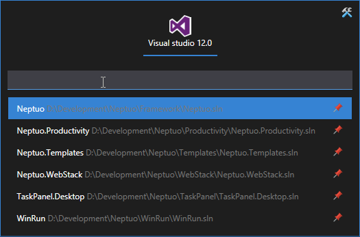
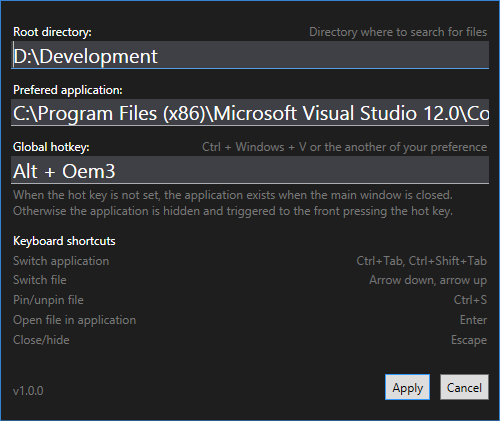
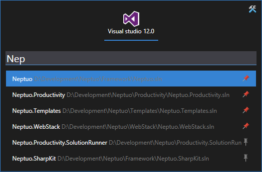
Keyboard only designed application for simple and fast open of Visual Studio solution files.
Configuration takes single folder where to look for *.sln files, has the option to set prefered Visual Studio version
and global (Windows wide) shortcut.
After setting required configuration, main window will open. Here you can filter solution files from your harddrive and manage favourite ones.
By pressing enter, you run new a instance of selected version of Visual Studio with the selected solution.
Download
Version history
-
v1.1.0
- Configuration property for suggestion count.
- Configuration property for searching by 'StartsWith' or 'Contains'.
- Added command line parameter '--hidden' for starting application hidden.
- Configuration property whether to save or not last searched phrase.
- Fix: Selecting first suggested item when this one is the only one.
-
v1.0.0
- Favourite solution list.
- Global hotkey.
WindowsDock
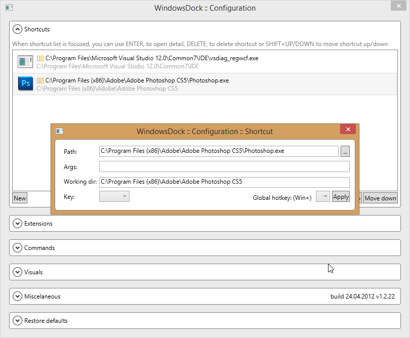
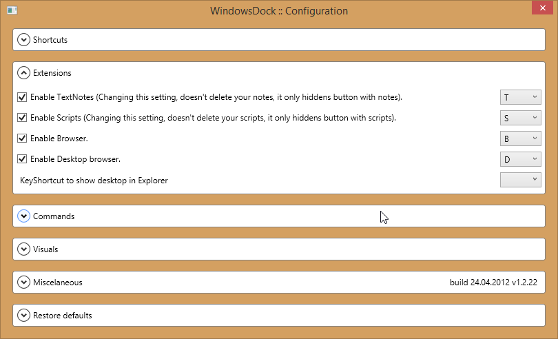
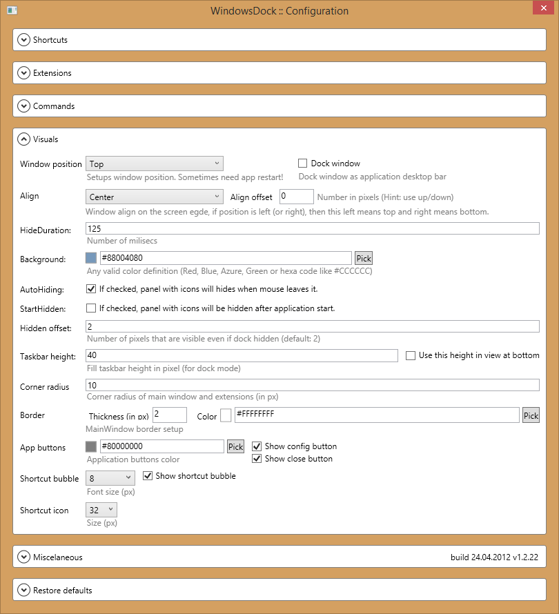
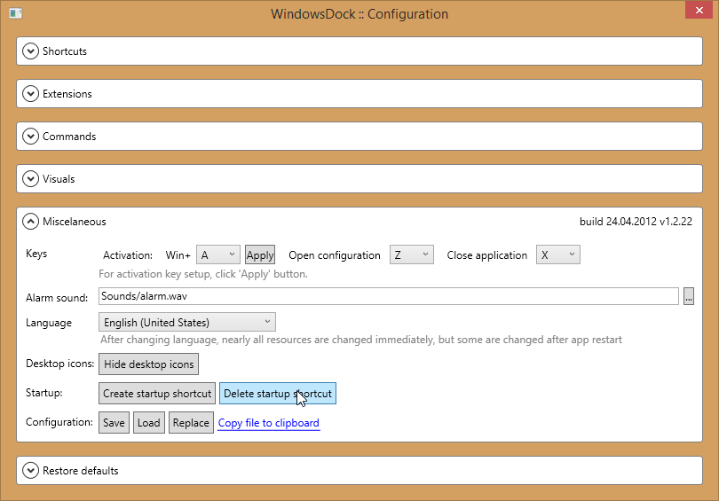
WindowsDock is OSX-like application launcher. It has many layout and keyboard configurations to suit most users needs.
Beside application shortcuts, dock can host user notes with alarms, simple directory and desktop browser and custom command line scripts.
Download
Version history
-
v1.2.22
- Minor fix (that ugly border around shortcut on main panel vanished).
-
v1.2.21
- Global hotkeys for shortcuts (for only in combination with Windows key).
-
v1.1.20
- Configuration for small bubbles on top of shortcuts on main panel.
- Basic setting for shortcut icon size.
-
v1.0.19
- Taskbar height + posibility to use this as offset from bottom.
-
v1.0.18
- Dockable WindowsDock, you can dock main panel to one edge of screen and make it always visible.
- Some minor fixes.
-
v1.0.17
- Colors for application buttons (Config+Close).
- Posibility to hide them from main panel.
- Context menu on main panel as substitute from these buttons.
-
v1.0.16
- KeyShortcut to show desktop in Explorer.
-
v1.0.15
- Added support for pin to right and bottom edge of primary screen.
-
v1.0.14
- Posibility to configure activation key (Win+selected key).
- App restart after locale change nearly not needed (with exception for some resources - like datetime pattern).
- Partial internal configuration changes.
-
v1.0.13
- FIXED: Program doesn't crash when one instance is running and you try to run another (caused by binding global hotkey).
- Minor internal changes.
-
v1.0.12
- Translated items in configuration dropdown lists.
-
v1.0.11
- FIXED: Restart not needed after position change (left,top).
- Minor configuration changes.
-
v1.0.10
- Add support for setuping border, thickness and color.
- Border radius can also be set from configuration window.
-
v1.0.9
- Added possibility to change (or disable) application hotkeys (Win+W remains as application activation key, but yout can change T,S,B,D,X and Z keys to run extensions and etc.
-
v1.0.8
- Added possibility to place dock on left edge of primary screen.
- Added window align to screen edge + offset setup.
-
v1.0.7
-
Add support for localization, right now we support Czech and English, but you can easily add support for another language,
simply open application installation folder, go to Resources a then copy one of files there and name it 'Resources' + underscore + language (and country) code,
like 'Resources_cs.txt' or 'Resources_fr-FR.txt'. If you do so, please send to me localized file and will add it to the application.
-
v1.0.6
- Space added as posible key to shortcut assignment.
- Some minor fixes.
-
v1.0.5
- Fix of show/hide bug
- Removed opacity (use alpha channel in background color
- After start "autohide"
-
v1.0.3
-
Hotkeys in Shortcuts edit
- ENTER for opening shortcut detail (also DOUBLECLICK works).
- DELETE for deleting shortcut.
- SHIFT+UP/DOWN for moving shortcut.
- Working directory can be set for shortcut+script (defaults to file directory).
-
v1.0.0
-
Hotkeys
- Dock can be activated pressing Win+W.
- Each shortcut can have hotkey (letters+num) to run that shortcut.
- Shortcuts can share same hotkey to run multiple programs pressing single key.
-
Extensions shortcuts
- Browser - B
- Desktop - D
- Scripts - S
- Textnotes - T
-
Configuration
- Buttons for manual saving/loading configuration.
- Button for replacing current configuration.
- Button for copying current configuration file.
- HiddenOffset - number of pixels that are always visible to top of display.
Link Extractor

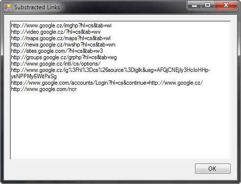
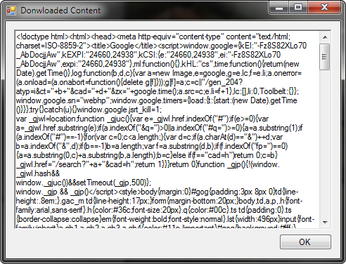
LinkExtractor is simple desktop application for parsing document and extracting links.
Document can be download from URL or pasted in from clipboard. After parsing document, found links are shown with checkboxes and additional filter
to select links that will be extracted to plain text, each one on its own line.
The application is installed as standart Windows application to Program Files folder.
Download
Version history
Productivity (VS Extension)
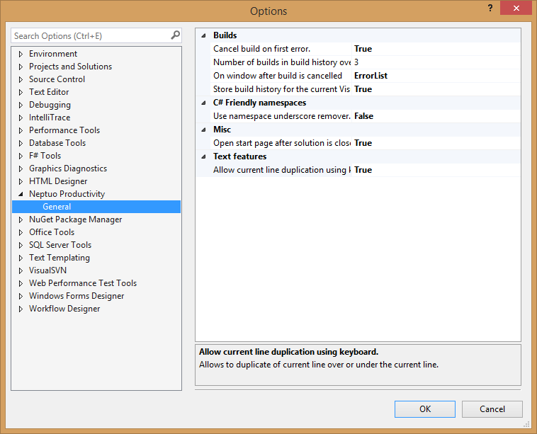
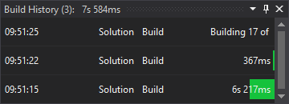
Productivity is simple Visual Studio extension containg set of missing features. All features are configurable, and can be disabled, from Options page.
Features
-
BuildInfo is tool window with information about length of last builds. Configuration contains property for settings count last builds to display.
In the heading of window is displayed summary of last builds. This info counted only on single instance of Visual Studio and is not presisted anywhere.
-
Cancel build on first error stops build after first project fail. This drops pointless errors and shrinks fail build time.
-
Show start page after closing solution will, exactly, show start page after closing solution.
-
Line duplication provides commands for duplicating current line up and down. These commands can have keyboard shortcuts assigned, so duplicating line will be easy.
Currently, duplication of multi line selection is not supported and will duplication only the line with cursor.
Download
Version history
-
v0.5.1
- Build info.
- Cancel build on first error.
- Line duplication.
- Show start page after solution is closed.
- Remove underscore-prefixed C# namespaces.
Ooops!
You have found a page, that we do not have anymore (or did not ever have)...